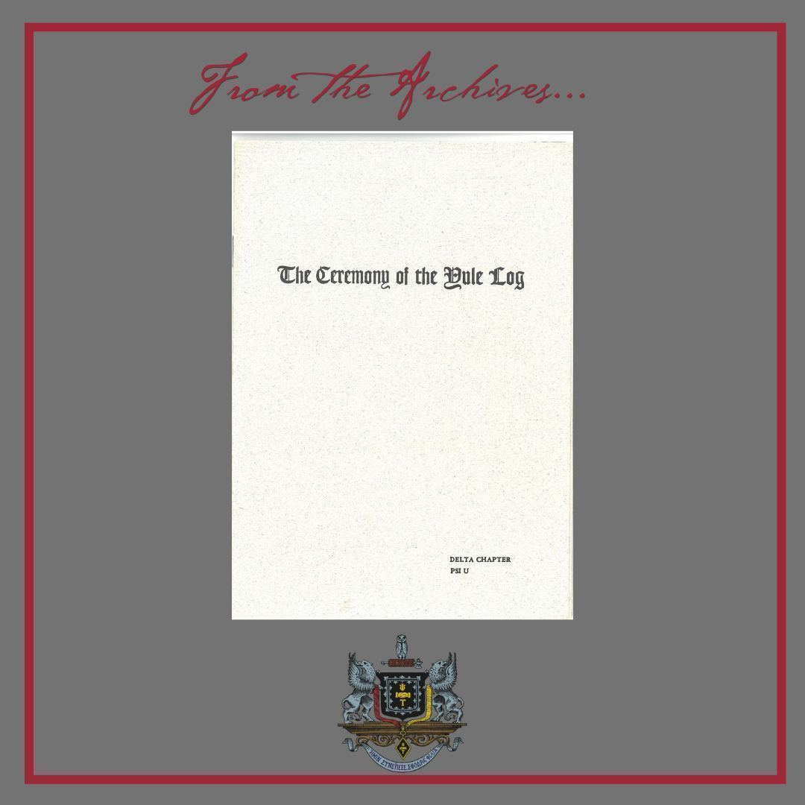

From the Archives · 1898
The Ceremony of the Yule Log

The Delta Chapter at New York University has one of the oldest chapter traditions in all of Psi U: Its annual Yule Log event. Occurring on the first Monday of December, the Yule log tradition traces from Brother Erik Wallin, Delta 1898, telling of the Swedish tradition of carrying a log to the family Christmas fire following their return from the midnight church service. The senior Delta alum at the event retells this "Tale of the Yule Log" and often this event is coupled with the Initiation of the Fall pledge class of the Delta Chapter. Brothers are then invited, by chronological order, to say a few words similar to how our chapter meetings close with Caibirean Rights.
This year, the Delta Yule Log is happening on Monday, December 4th and not only will the Delta Chapter be initiating its fall pledge class, one of the largest in years, we will also be holding the Founder's Pledge Ceremony for the students who have formed the Lambda Owl Club and are in the process of reviving our chapter at Columbia University. More info, including how to RSVP, can be found here.
Our Archives contain the following document which was distributed at the 1975 Yule Log.
Delta Yule LogDownload